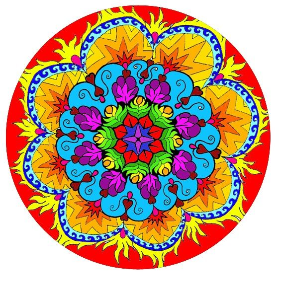
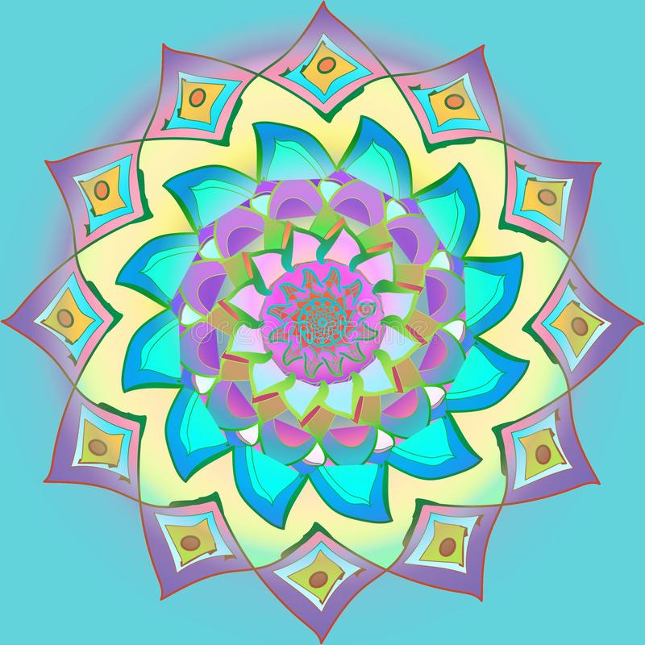

Colorear mandalas es una óptima actividad gracias a la cual tanto los grandes como los chicos pueden utilizar tanto para fomentar la creatividad y la fantasía como también usar como terapia con estas creaciones muy personales. Colorear mandalas además de ser una actividad divertida mejora la concentración, ayuda a la coordinación ojo-mano, estimula la creatividad y produce una acción muy relajante que ayuda a desestresarse
Son los colores cálidos son el rojo, el anaranjado, el amarillo.
Son los colores fríos son los verdes, azules y violetas
Cuando uno desea pintar mandalas hay que dejarse llevar por la intuición. Las personas tiene¡den a elegir determinados colores de acuerdo al estado de ánimo. Por lo general la elección de colores vivos decae en las personas que están alegres.
|  |
|---|
Los colores pastel son muchas veces elegidos para colorear mandalas.
|  |
|---|